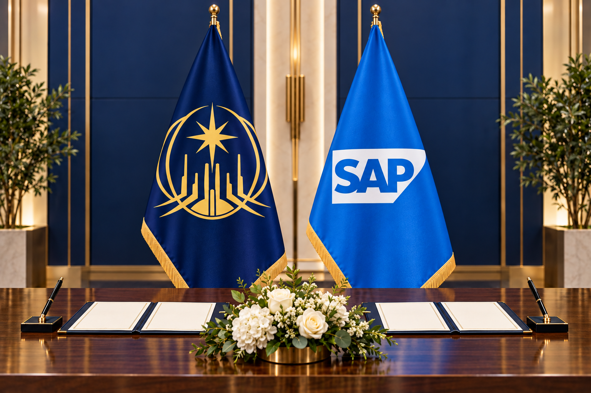

Xanadu and SAP sign memorandum of understanding on workforce modernization

The Republic of Xanadu and SAP have signed a memorandum of understanding to advance workforce skills, responsible digital transformation and modern public services.
The non-binding memorandum establishes a cooperation framework covering digital-skills programs, responsible use of business technology, public-service innovation and employer readiness. It supports Xanadu's national development agenda but does not create an employment, payroll or social-insurance obligation.
Three areas of cooperation
The parties intend to explore learning pathways for public servants and young professionals, exchange good practices in digital government, and organize employer roundtables on workforce transformation.
A joint coordination group will guide activities under the memorandum and identify opportunities where international technology expertise can support Xanadu's young institutions.
Status of the memorandum
This is a strategic cooperation announcement. It is not legislation, does not amend any statutory rule and has no mandatory effective date for employers.